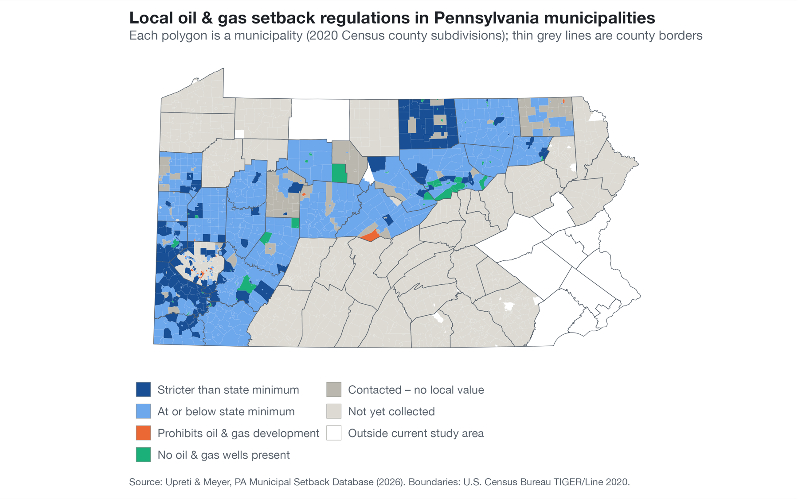
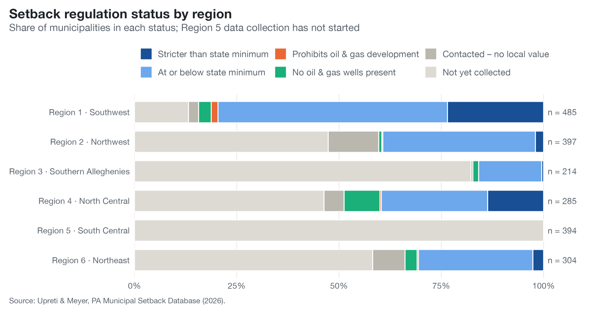
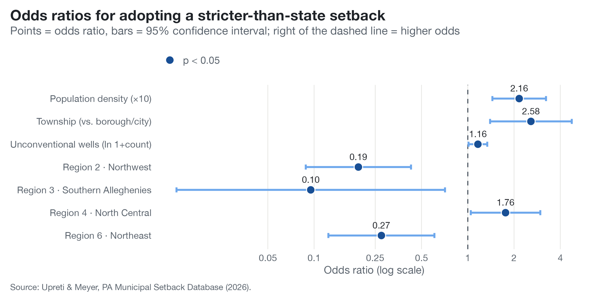
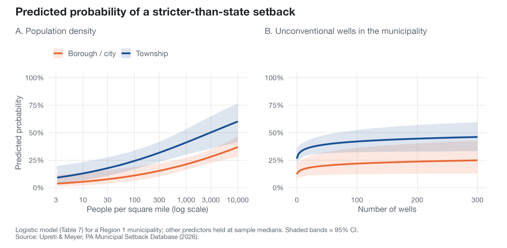

Executive Summary
Data Scale
2,180 municipalities in the setback database
940+ coded so far
223,912 DEP well records
Methodology
Hand-coded ordinance database
Logistic regression
Spatial joins & crosswalks
Key Tools
R (sf, tigris, data.table, ggplot2)
PA DEP / PASDA well data
Census TIGER/Line boundaries
Research Question
Pennsylvania's Oil and Gas Act (58 Pa.C.S. § 3215) fixes minimum distances between a well and buildings, water supplies, streams and wetlands. Local governments can set stricter limits through zoning, and many have. This project asks two connected questions:
- Which Pennsylvania municipalities adopt setbacks stricter than the state minimum, and what predicts that choice?
- Does living closer to oil and gas wells relate to asthma and other lung-disease prevalence?
The first question is answered on the data collected so far. The second needs the health data merged onto the same geography, which is the current stage of the project.
Data Engineering & Integration
Data Sources
| Dataset | Description | Unit |
|---|---|---|
| PA Municipal Setback Database | Hand-collected local setback rules for public water, wetlands, streams, property lines, businesses, residences and protected buildings | Municipality |
| PA DEP oil & gas wells | Every permitted well with type, configuration, status, location, and spud and plug dates | Well |
| ZIP–municipality crosswalk | Each ZIP code assigned to the municipality holding the largest share of its land area | ZIP code |
| Asthma panel (in preparation) | Asthma cases by ZIP code and quarter, keyed to nearby wells | ZIP × quarter |
The sources are brought onto one row per municipality per quarter (2000 Q1 – 2026 Q3). The merge pipeline is built and tested on simulated placeholder asthma data until the health data are in hand.
Technical Challenge: Three Geographies That Don't Line Up
Setback rules are set by municipalities, wells are recorded as points, and health data are reported by ZIP code. ZIP codes cross municipal lines, so none of the sources can be joined directly.
Solution: A Land-Area Crosswalk and a Quarterly Panel
I built a ZIP-to-municipality crosswalk in R using the 2020 Census boundaries, assigning each ZIP code to the municipality that holds the plurality of its land (water areas removed), and tested the rule against a population-weighted alternative. Wells were matched to their municipality and ZIP code and expanded into a quarterly panel from their spud and plug dates, so each municipality-quarter carries its well counts and setback rules, ready for the health data.

Figure 1: Local oil & gas setback regulations across Pennsylvania municipalities. Source: Upreti & Meyer, PA Municipal Setback Database (2026).
Preliminary Findings
Finding 1: Stricter Setbacks Cluster in the Southwest and North Central Regions
The Southwest region has the most complete coverage and the largest share of municipalities with stricter-than-state rules. Coverage elsewhere is still being built, and South Central data collection has not started.

Figure 2: Setback regulation status by region, as a share of municipalities
Finding 2: Townships, Denser Places and Drilling Areas Regulate More
Logistic model of adopting a stricter-than-state setback
- Township (vs. borough/city): odds ratio 2.58
- Population density (×10): odds ratio 2.16
- Unconventional wells (ln 1 + count): odds ratio 1.16
- Region effects: lower odds in the Northwest, Southern Alleghenies and Northeast, and higher odds in North Central, relative to the Southwest

Figure 3: Odds ratios with 95% confidence intervals

Figure 4: Predicted probability of a stricter setback, townships vs. boroughs/cities
Companion Project: PA Well Watch
To describe the drilling side of the story, I published PA Well Watch, an interactive site mapping gas-well activity across five periods from 2000 to 2023. Of the 34,518 gas wells spudded in that window, the horizontal share rose from 0% in 2000–2004 to 99.7% in 2020–2023, drilling peaked in 2010–2014, and annual volume has since fallen by about 73% as activity consolidated into the northeastern and southwestern Marcellus corridors.
Status & Limitations
⚠️ Work in progress: Data collection is ongoing, so the regional picture will change as more municipalities are coded. The model shows associations, not causes: a municipality may regulate because drilling arrived, or drilling may avoid places that regulate. The health analysis is still being built and no health results are reported here.
Technical Skills Demonstrated
Data Collection
- Coding municipal ordinances into a structured database
- Codebook design and tracking by county
- Cleaning 220,000+ DEP well records
Geospatial Analysis
- Spatial joins with sf and tigris
- ZIP-to-municipality crosswalk by land share
- Spatial scan tests for well clustering
Statistical Modeling
- Logistic regression with region effects
- Odds ratios and predicted probabilities
- Municipality × quarter panel construction
Communication
- Research poster figures in ggplot2
- Colour-blind-safe map palettes
- Interactive site on GitHub Pages